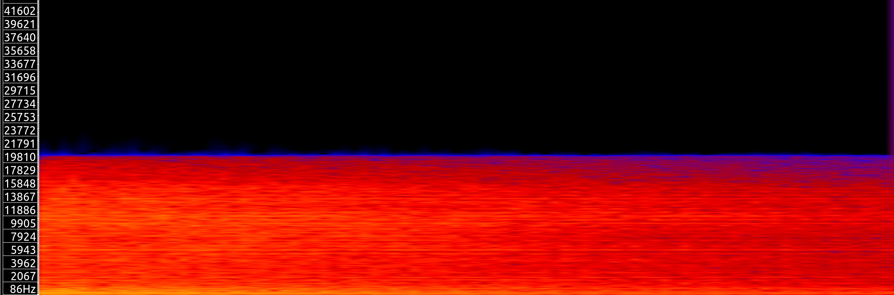
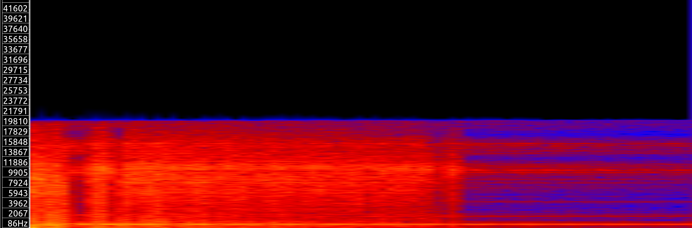
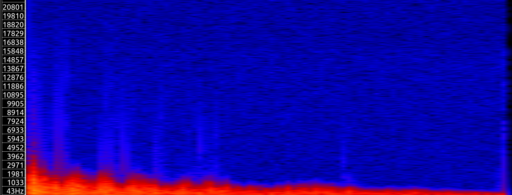
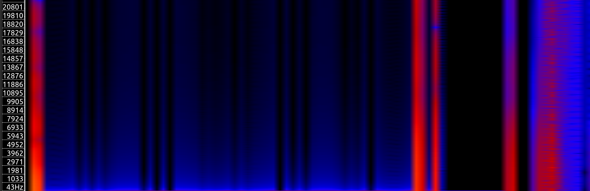

Listener positioned at the front of the vibrating plate.

Listener positioned at one side of the vibrating plate.
Implicit Euler
These are animations and spectra generated with the
Implicit Euler method, which has much numerical dampings.

The same tapping example having the same paramter with the previous Symplectic Euler method.
No artificial damping here, but numerical damping is significant.
A ball falling example. The bouncing sound are heard.

A bowl falling example, numerous clicking sound are heard.
Aliquam vitae elit ullamcorper tellus egestas pellentesque. Ut lacus tellus, maximus vel lectus at, placerat pretium mi. Maecenas dignissim tincidunt vestibulum. Sed consequat hendrerit nisl ut maximus.
Aliquam vitae elit ullamcorper tellus egestas pellentesque. Ut lacus tellus, maximus vel lectus at, placerat pretium mi. Maecenas dignissim tincidunt vestibulum. Sed consequat hendrerit nisl ut maximus.
Aliquam vitae elit ullamcorper tellus egestas pellentesque. Ut lacus tellus, maximus vel lectus at, placerat pretium mi. Maecenas dignissim tincidunt vestibulum. Sed consequat hendrerit nisl ut maximus.